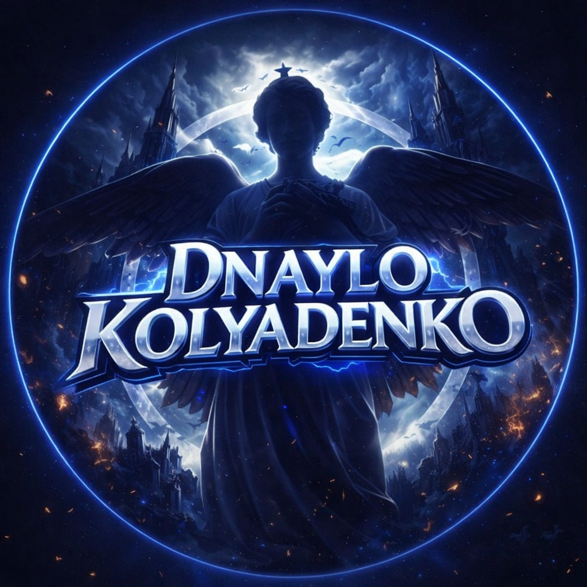
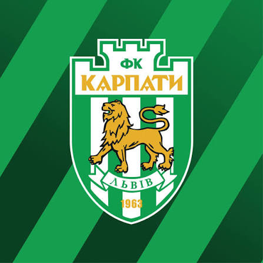

Andrew
Living in Lviv, Ukraine
EN
UA
RU
🎵 Music: OFF
About Me
Generated: 2000 lines
Про мене
Згенеровано: 2000 рядків
Обо мне
Сгенерировано: 2000 строк
Telegram
My Telegram — @Dexter1938
My Twin — @DanilKolyadenko
Best Friend — @maxi4ka0
Close Friend — @NetherTopka
My Favorite Club

🎶 Club Anthem: OFF
Tip: when the anthem starts, the main music stops automatically.
My City — Lviv